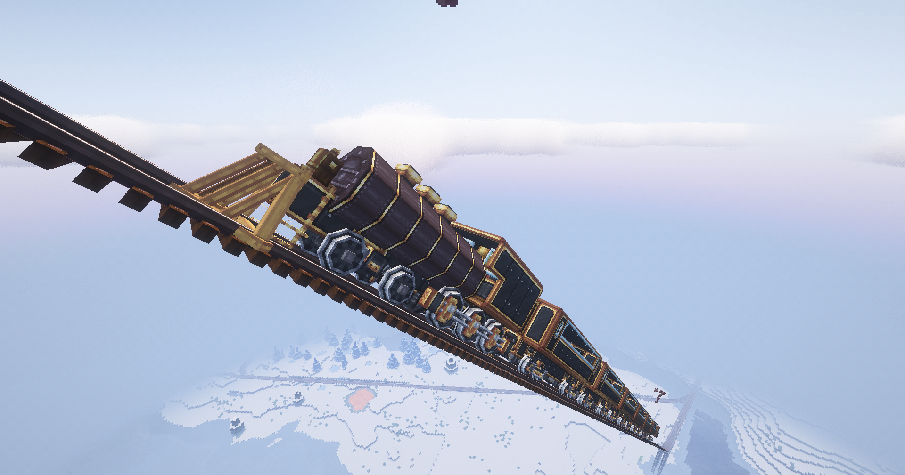

物理：
从地形到刚体
行为 ①物理
行为 ②代码
行为 ③运行
Minecraft 社区模组
预设运动 与 物理刚体
CREATE机械动力装置按预设方式运动



风车轴承 · 绕轴旋转 矿车装置 · 沿铁轨移动 列车 · 沿轨道行驶 FusionSwarly · Modrinth Create Mod Wiki HadesScience · Modrinth
轴承活塞轨道
附属模组物理引擎方块结构 → 刚体


 Create Aeronautics
Valkyrien Skies
Create Aeronautics
Simulated Team · Modrinth
Valkyrien Skies Team · Modrinth
Create Aeronautics
Valkyrien Skies
Create Aeronautics
Simulated Team · Modrinth
Valkyrien Skies Team · Modrinth
物理引擎真正的刚体
SPACE · 引擎原生物理
框选地形
执行组装
执行组装
框选任意一块地形
组装
成为刚体实体
按方块分布计算
质心
转动惯量
重力
推力
碰撞
摩擦
质心
重力
推力
选区工具 · 拆分
拆成独立组件
车轮×0
舱门
炮塔
组件树
每个实体最多 64 个组件 · 最多 16 层
引擎的取舍
只提供 通用的刚体物理
ENGINE · RIGID BODY
任何实体都一样
- 质量 · 质心 · 转动惯量
- 重力 · 碰撞 · 摩擦
- 施加力与力矩
没有“螺旋桨方块”，也没有“车轮方块”
Create Aeronautics螺旋桨
Create Aeronautics
不单独建模
Create Aeronautics热气球
Create Aeronautics
不单独建模
Create
车轮
Create
不单独建模
外观 · 用组件树搭
螺旋桨
桨毂 → 可转动的子组件
桨叶 → 装饰体素
转起来，机身不动
外观：组件树 · 推力与升力：代码
那么，推力、平衡与升力从何而来？
下一节 · 05 代码：控制与自动化